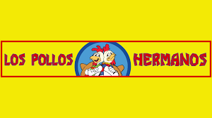

Return to Home
Meet our founder, Gustavo Fring. Together with his partner, Max Arciniega,
Los Pollos Hermanos's fourteen locations had its humble beginnings in Mexico.
You can now join our Pollos Hermanos family:
Where something delicious is always cooking.
Founders Gustavo (left) and Max (right) discussing their plans for Los Pollos Hermanos - 1989